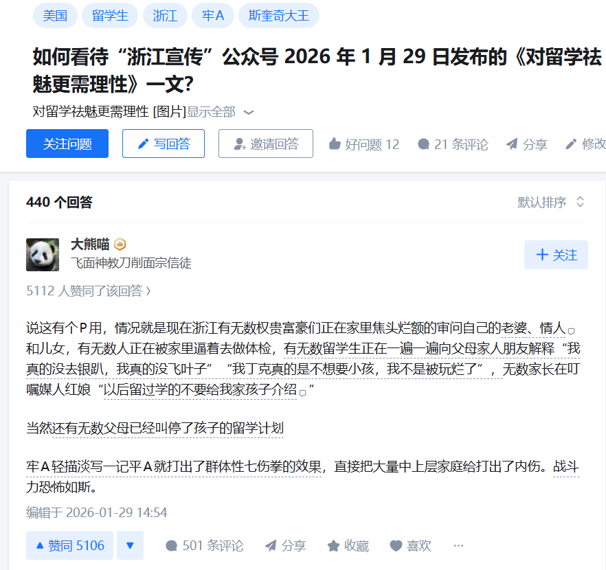
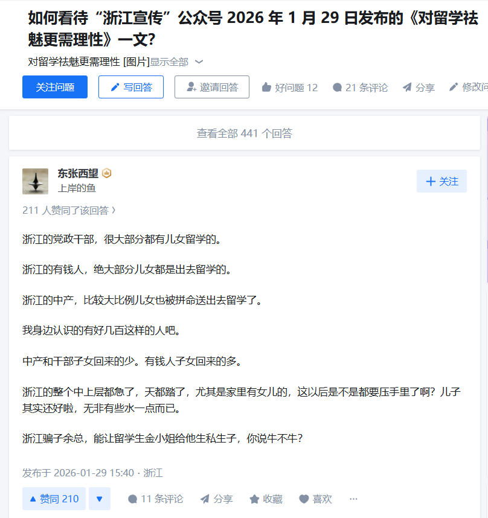

北雁冬翼（simone luxem）🏳️⚧️🏳️🌈🔬
@Simone_Luxem
理解不了
至少在大多数情况下，留学，难道不是要么为了学习要么为了以后留在当地生活的吗…？这在留学这件事启动之前，就应当是作为预先的目的设定好的吧..？
那在这种情况下，无论是作为留学生自己还是留学生的父母，就算那个什么说的都是真的，又和自己有什么关系呢？


星川 蘭🇺🇦🇪🇺🇬🇱🇮🇷Fereydun ver.🌻📄
@Hoshikawa_ran
浙江省委书记回到家，一拉开床单，床底下全是孔门弟子 https://t.co/nODXxkI7st